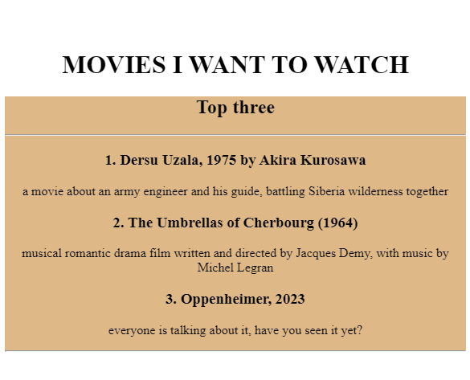
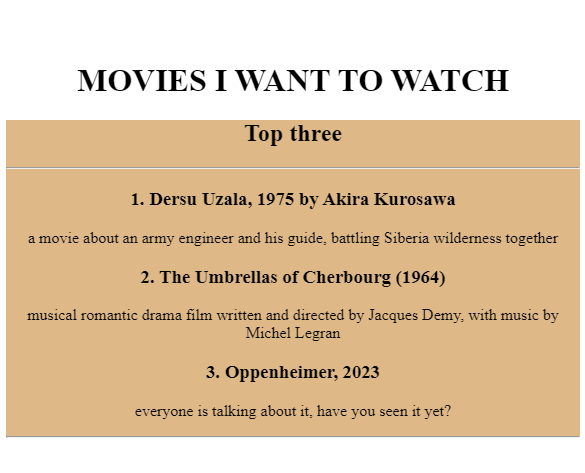
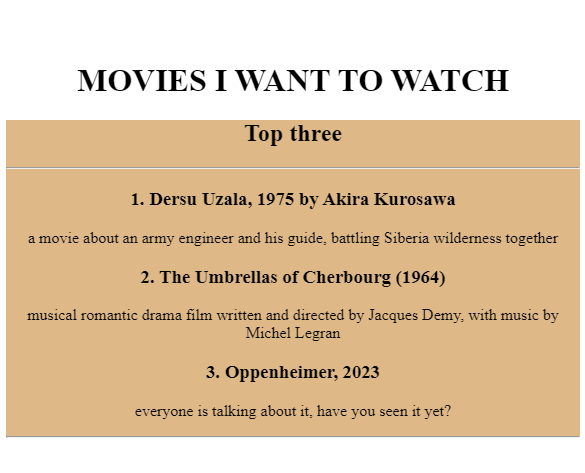

Yala's Portfolio
I'm an aspiring Graphic Designer and Web Developer
One of the first Graphic design projects
Movies I'd like to watch

Who I am
How to NOT get in Touch
press here to see my meme page!
 
